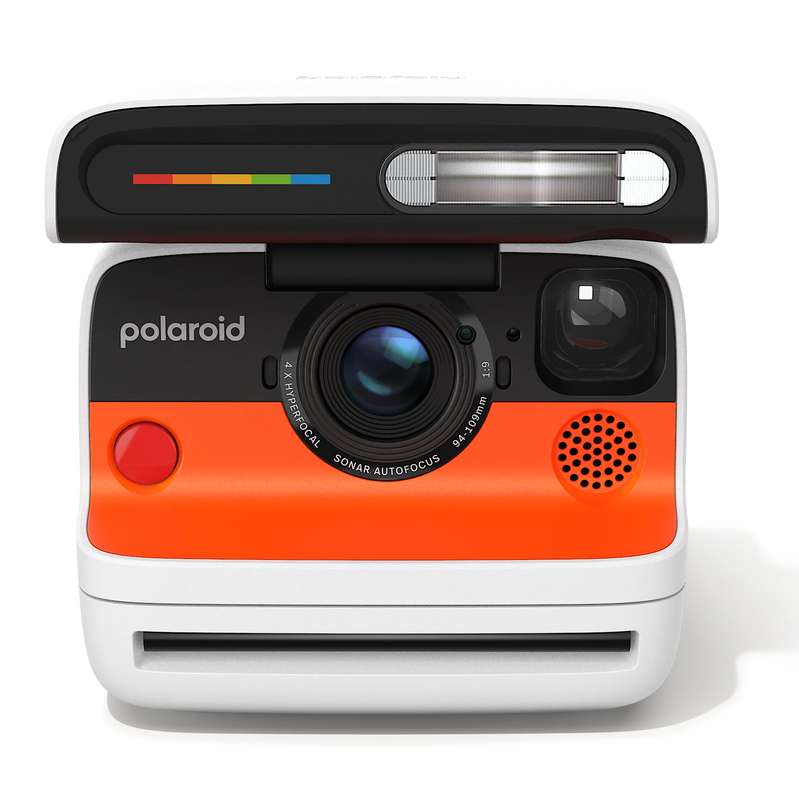
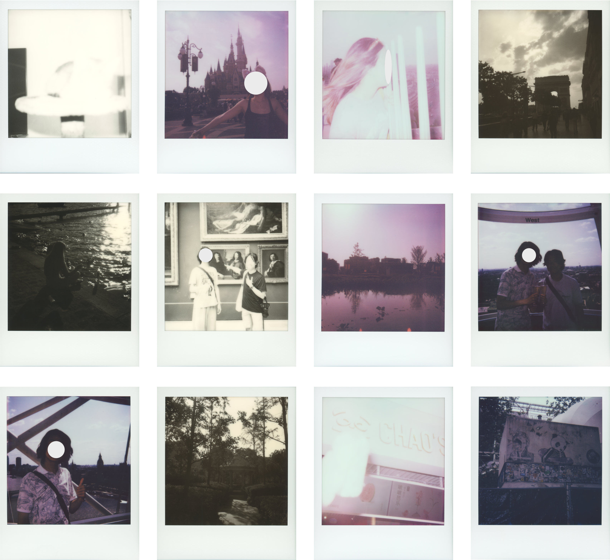
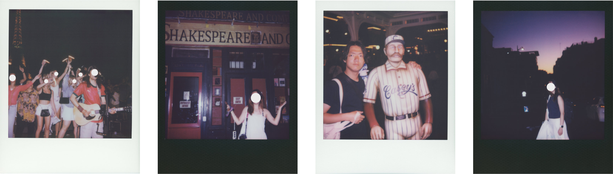
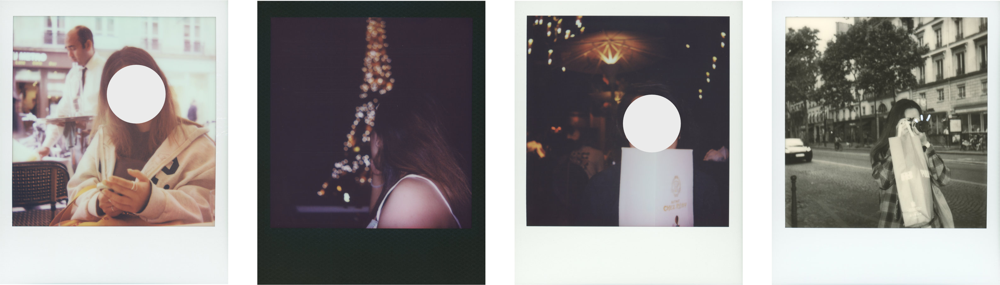
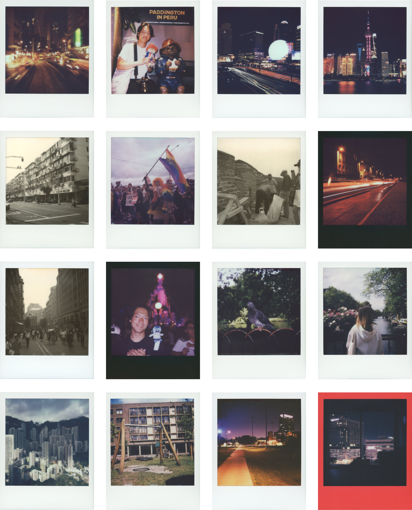

Published July 29th, 2025
tl;dr
Get the Flip if you want a (typically) sharp, easy-to-use point-and-shoot that you can occasionally use for intentional shooting.
✅ Pros
Lens is reasonably sharp with the opportunity for perfect sharpness in manual mode
A powerful flash for beautiful portraits in any light
Meter works perfectly most of the time except in strong backlighting situations
A fast, responsive, mostly full-featured app experience
Clamshell, toy-like design protects the camera, is handy for long exposures without a tripod, and is great for social situations
❌ Cons
Autofocus is unreliable and its focus area is too wide
Flaring is extremely strong when shooting against bright light sources (e.g. the sun, street lamps)
Viewfinder is quite small and overly recessed, making it difficult to frame shots and causing many to be off‑level
Manual focus via the app does not work to override minimum focus warning, making it difficult to take through-the-window shots
For context, I am an enthusiast and occasional professional photographer regularly shooting both film and digital. The Polaroid Flip is the first Polaroid product I've owned, and I have not previously shot instant film aside from the occasional Instax mini.
The Flip is running the latest firmware (version 1.00.5) as of this writing. All sample photos in this report were taken by me on the same Polaroid Flip. Photos were scanned with the Epson Perfection V600. The only edits were cropping and scaling. Note that this means the photo samples shown look less vibrant, with lower contrast, less accurate colors, and higher black levels compared to the physical prints. This can be very easily fixed with a curve and saturation adjustment, but I wanted to keep the photos as original as possible.
My report focuses on my experience with the camera and technical insights from extended shooting. It does not include regurgitations of the Flip's specs. For that, see the official Polaroid site or the user manual. I have not used other instant film cameras extensively and will therefore not compare the Flip to other instant film cameras. Note that, though the Flip is relatively inexpensive at ~$200 MSRP, film is $2/exposure. Most faces in photos are blurred for privacy.
This is an entirely independent report. I have no contacts with Polaroid or its employees, and this report has not been shared prior to its publication; the Flip and all film were purchased with my own money.

The Polaroid Flip in white
I did not expect myself to love the look of the Flip as much as I did. I own the white variant, and I found the black, orange, and white three-tone styling both retro and modern in the best way. The camera was consistently satisfying to use – the snap of the clamshell as it closes, the whirr of the motor as the film ejects, and the pop of the vacuum tube flash all made the photo-taking experience feel so rewarding that I found myself aching to press the shutter button.
The camera does require quite a bit of force to operate – opening and closing the clamshell requires a surprising amount of force, as does inserting film. The clamshell, focus system, and the bottom cover all move and operate with a slight rattle. Far from making the camera feel flimsy, I found that it made the camera feel durable. The amount of force I need to exert just to open the camera for shooting was, for me, a constant reminder of "you can be rough with me; I'm built to take it and more." Part of this feeling of indestructibility is that the body naturally flips down to protect the Flip's lens and other fragile components when not in use. I've dropped the Flip a couple of times already, with the camera showing no dents (though a few scratches) and no impact to functionality.
The bubbly plastic design feels fun and unobtrusive; as someone who would show up to karaoke with a massive mirrorless camera, there's a significant difference in how people react to my black behemoth and the cute, bubbly Flip that looks like a well-engineered toy. The Flip puts people at ease so they can just be themselves. Subsequently, I've captured more genuine human moments with the Flip and have had countless more strangers ask to be photographed with the Flip. This is not to mention the excitement of collectively watching a picture develop and giving away a Polaroid.
The only gripe I have with the camera's design is the viewfinder; the viewfinder is tiny and hard to see, has no frame lines, no guide lines, and is overly recessed into the body. This recession meant that I had to turn my head to fully put my eye on the viewfinder, throwing off my sense of level and leading to many tilted photos.
The meter appears to function much like an averaging meter that covers around 70% of the frame. But despite owning and successfully using many film cameras with averaging meters, I have yet to internalize the Flip's meter.
Even after a thousand shots, I would occasionally get overexposed or underexposed shots, and the flash sometimes over-fires in close range (see missed exposure examples below). This might be due to the lack of dynamic range in Polaroid film rather than the meter itself, but keep in mind that you will get an overexposed or underexposed image every once in a while.
When there's heavy backlighting or extreme dynamic range, I resort to either going into manual mode with the app or the tried-and-true method of reframing to point at something with less dynamic range, half-pressing the shutter to lock exposure, and then shooting my intended subject. Overall, this meter hits way more often than it doesn't, and there were many times where I put the camera on a tripod, trusted it to auto-expose, and got a picture that was exposed so perfectly I couldn't have done it better manually.

12 examples of missed exposure. Starting from the top left photo and working left to right, top to bottom:
Image 1: Overexposure; overly bright flash, close range
Image 2: Underexposure; backlighting
Image 3: Overexposure; overly bright flash, close range
Image 4: Underexposure; backlighting
Image 5: Underexposure; backlighting, flash manually deactivated
Image 6: Overexposure; no clear reason, flash manually deactivated
Image 7: Underexposure; backlighting
Image 8: Underexposure; backlighting, lack of flash (likely bad metering, but possible insufficient flash power)
Image 9: Same as Image 8
Image 10: Underexposure; backlighting
Image 11: Overexposure; overly bright flash, close range
Image 12: Underexposure; backlighting
Autofocus is where the Flip disappointed me the most due to its overly wide autofocus area and the lack of feedback.
The Polaroid Flip comes with a new sonar-based autofocus system that, as far as I can tell, focuses on the closest object in its targeting area, lacking any of the smarts such as face-detect AF or even multi-point focus in the DSLRs of yesteryear. That in itself is not a problem; the problem is the ridiculous width of the targeting area – the focus area is so wide that it extends beyond the edges of the viewfinder frame. This leads to very problematic focusing for many situations that I (and I believe many others) commonly use the Flip in, like:
Dinners: The Flip would focus on the table and the dishes instead of the people across the table
Outstretched Hands: The Flip would focus on what is held in the hand (like a Harry Potter wand) rather than the face
Scenes with complex geometry: It is impossible to use autofocus for a portrait of someone in leaves, a cat hiding in rocks, or someone behind bars
What makes the autofocus worse is that there's almost no way to know what the Flip decided to focus on. There's no indication of focus zone on the otherwise-rich LED display, with the sole feedback being the whir of the lens when the camera switches a focus zone. The only precise indication of focus is in the app with the camera in manual mode, where the current focus zone would be lightly highlighted.
Regardless, over the course of a thousand shots, I got more and more shots in focus by:
Using autofocus for flat subjects with nothing at all between the Flip and the subject, focusing multiple times to avoid occasional mismeasurements (about 4 out of 8 shots)
Using a dance of focus-recompose, removing objects in front of the subject, performing multiple focus measurements, and the whir of a switched focus zone to guesstimate focus for more complex situations (about 3 out of 8 shots)
Using my iPhone to measure distance using its LiDAR sensor and switching the camera into manual focus with the Polaroid app for the most complex situations (about 1 out of 8 shots)
Simply not taking the photo when I am not confident the autofocus will hit
With those techniques, I reduced my miss rate from about 2 out of 8 shots to a nearly perfect 1 out of 100 shots. Regardless of my empirical accuracy in using the autofocus, the lack of autofocus feedback and general flakiness of the system (half-pressing the shutter while aimed at the same place will sometimes result in different focus reads) still had me feeling anxious for almost every shot – would the Flip focus on the table, the ceiling, the wall next to me, or the subject? My near-perfection with focus is hard-earned; I found myself bending myself and the scene to the Flip, interrupting dinner to move candles out of the way so the Flip wouldn't focus on them and using manual focus every time I thought the scene was remotely complex.
tl;dr, the Flip's autofocus has a massive learning curve and can be accurate, but the anxiety of a missed shot never left me.
Aside: The width of the autofocus was very inadequately communicated in the camera's manual; my first shots with the Flip were all out-of-focus, and I almost thought the camera was broken. If an experienced photographer found it hard to figure out the Flip's autofocus system, I can only imagine how difficult it must be for a novice.
12 examples of missed focus. Starting from the top left photo and working left to right, top to bottom:
Image 1: Flip focused on table below (out of frame)
Image 2: Flip focused on side walls instead of subject
Image 3: Flip focused on table below (out of frame)
Image 4: Flip focused on rocks
Image 5: Flip focused on pavement
Image 6: Flip focused on bars
Image 7: Flip focused on walls and railing
Image 8: Flip focused on table and dishes (visible in frame)
Image 9: Flip focused on table (barely visible at the very bottom of the frame)
Image 10: Flip focused on towel instead of subject
Image 11: Flip focused on table corner closest to camera, missing subject
Image 12: Flip focused on table below (out of frame)
The Flip's lens system is sharp, the colors it produces vibrant, and the limiting factor for many shots is the film, not the Flip. The f/10 maximum aperture allows for shots in surprisingly low light (I found myself comfortably handholding exposures as long as 1/10s) and is capable of stunning bokeh and shallow depth-of-field (see examples below).
But where the lens fails is in flare. As long as the sun or another bright light source is in frame, even in the corner, the Flip's contrast plummets at worst and at best creates streaks in the image. The lens is surprisingly flare-prone, and makes shooting with any bright light source in frame nearly impossible (see examples below).
The flash is unexpectedly powerful, with Polaroid rating it for 4.5m @ f/8. For context, this is more power than the most powerful dedicated compact flashes like the Godox iM30. This means that the Flip's flash works perfectly as a fill flash for portraits in direct sunlight and can even light up a dark room (see examples below).
The Flip's lens system is surprisingly capable for more deliberate photos in manual mode; in short, when stopped down to f/64, the Flip's lens allows for extremely sharp shots for any subject from 0.5m to infinity (technical explanation: at f/64, the circle of confusion from misfocus and diffraction is below the resolving power of the film for focus distances from 0.5m to infinity). Because of this sharpness and the exceptionally powerful flash, I used the Flip in manual mode through the app significantly more often than I expected; I shot portraits, landscapes, and long exposures, and the results from those manual exposures are nothing short of stunning (see Gallery section).
Note for using the Flip at f/64 for perfect sharpness: f/64 means that you'd likely need a very long exposure time, requiring a flat surface or a tripod. For long exposure times, be mindful of reciprocity failure, which kicks in for exposures longer than a second; I might write a post on reciprocity failure for Polaroid film in the future.
12 examples of flaring from the Flip. Almost all examples involve sunlight. Pictures 7 and 12 involve artificial light. As shown, the Flip suffers from significant bloom, extremely significant contrast loss from flare, and occasional ghosting. This is a small subset of examples; about 5% of my shots are affected by serious flare.

4 examples showcasing the exceptional flash power of the Flip. Starting from the top left photo and working left to right:
Image 1: Taken with nearly no artificial light source around (the only light lighting the scene was the Flip's flash). The Flip's flash managed to light the entire square, illuminating the performer and the audience behind him perfectly.
Image 2: Taken in complete darkness. The only light source is the Flip's flash. As shown, the Flip lit up the subject and the storefront.
Image 3: Similarly taken in near-complete darkness. The Flip perfectly lit the subject and some of the environment.
Image 4: Taken in minimal light at dusk. The Flip's flash perfectly illuminated the subject and even some of the road sign behind her, enabling this very moody portrait.

4 examples showcasing the beautiful bokeh and shallow depth-of-field of the Flip. Starting from the top left photo and working left to right:
Image 1: Classic shallow depth-of-field portrait taken with the Flip; the background is beautifully blurred into a creamy white thanks to shallow depth-of-field (and some flaring)
Image 2: The Eiffel Tower's lights at night transformed into stunning bokeh balls thanks to the Flip. The balls are surprisingly round and clean; upon closer inspection, the bokeh balls do lose their roundness near the edge of the frame and have a distinct blue border, but who's pixel-peeping on instant film?
Image 3: A restaurant's lights transform into beautiful little bokeh balls on the Flip. There even appears to be a minor swirl going on.
Image 4: Another classic depth-of-field portrait, this time more subtle. The buildings beautifully transition from a slight blur to a more noticeable blur from right to left as distance from the camera increases.
Overall, the Flip's lens is capable of shallow depth-of-field (which makes sense, given the Flip's lens is approximately equivalent to a 40mm f/4 on full frame in terms of depth-of-field characteristics) and can, in the right lighting conditions and if the Flip is feeling it, produce incredibly nice bokeh balls with some of the character you'd expect from a vintage lens.
Now for some rapid-fire gripes (and delights) with the Flip:
MFD alerts in manual mode: The Flip's minimum focus alert (where the camera refuses to shoot when the sonar detects that the subject is too close for the lens) cannot be overridden and triggers even when the camera is in manual focus mode. This makes it difficult to use the Flip for shooting through windows
A responsive and full-featured app: The app connects instantly to the camera most of the time, is beautifully designed, and provides exceptionally rich control over the Flip. The only gripe I have with the app is the lack of a timed exposure mode for extremely long exposures exceeding 30 seconds.
Potential connectivity issues: For extremely long exposures, I use the Polaroid app on my Apple Silicon MacBook Pro with a macro to stop the exposure at a precise time. However, the Flip often disconnects after about 1.5 hours of exposure (which ends the exposure and ejects the image); the devices are in close proximity.
Mirror dust: About 350 photos in, spots started appearing on my photos (see example below). I purchased many more packs of film, cleaned my rollers, and otherwise meticulously followed Polaroid and many others' camera care guides to no avail. The issue turned out to be dust on the internal mirror and a rocket blower fixed the issue. Nowhere is this stated in any guide that I know of, and this has led to many photos with noticeable dust spots. Ironically, I have yet to have roller problems even 1000 photos in despite every Polaroid maintenance article and video discussing dirty rollers.
Shooting delay: There is very rarely an unpredictable slight delay (a bit over a second) between when the shutter button is pressed and when the camera fires.
General gripes with the film: Polaroid film is softer, more expensive, less stable (some of my B&W Polaroids have significantly browned after just two months) and more finicky with regard to storage, temperature, and light shielding. But I found the color science and experience of Polaroid cameras well worth the film's shortcomings.
An example of mirror dust on the Polaroid Flip. There is one major speck of dust visible on the top-center-right of the image, with 6 more pieces of smaller dust visible in the top sky region as well.
After a thousand shots, I have found the Flip to be an incredible yet flawed point-and-shoot. It has been with me, capturing my favorite moments of the last 3 months. Its beautiful design and generally reliable meter combined with its mighty potential in manual mode make it perfect for the photographically-inclined consumer looking to shoot instant film. Although the film is shockingly expensive at $2/exposure, I think the $200 MSRP for the Flip is quite cheap for this caliber of camera.
As a photography enthusiast, I don't think the Flip was designed for me. Given that, I think the fun and love I have for this camera speak volumes to the Flip being an amazing tool for both capturing life and deliberate photography.
I have since purchased (but have yet to receive) a Polaroid I-2 for more reliable autofocus, less flare, and a larger viewfinder and expect it to be a significant improvement on what I (and other experienced photographers) need out of a camera. However, I still expect to continue to use the Flip for its more powerful flash, reliable meter, and its clamshell design.
At the very end, I would like to share my favorite photos taken on the Flip aside from the ones outlined in this report. Some I love for personal reasons, some I love because they're artistic, some I love because they're pretty. This report has been harsh at times. Ultimately, gear is secondary to the moment and the skill of the photographer, and the Flip is a perfectly competent camera for capturing that moment of joy, human connection, art, or just seeing a pretty thing.

16 images, shot on the Polaroid Flip. Photos were not edited after scanning. Contrast, color, and detail are worse on scans (especially unedited ones) than the physical print. Manual exposure and focus used for images 3, 4, 8, 13, 14, 15, and 16.
This report is human-written; generative AI was used only for proofreading and critical feedback.